地政学
ウランバートルはロシアと中国に挟まれた内陸国家の首都です。鉱物輸出、第三の隣国外交、安全保障、鉄道回廊が交差し、草原の独立性を都市の判断が支えます。均衡感覚が日常にも表れます。燃料と国境も重要です。
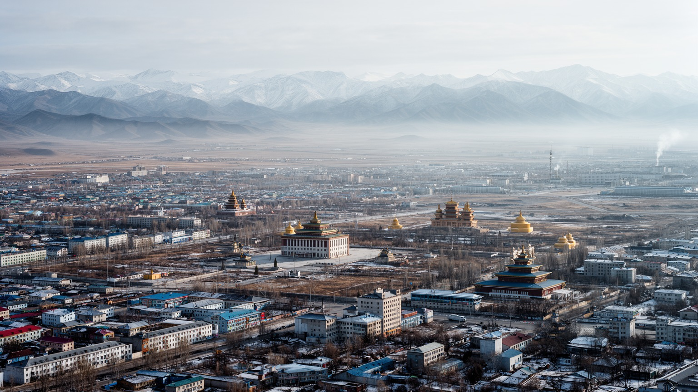
🇲🇳 モンゴル国 / 首都 / World City Atlas
草原国家の政治、鉱業経済、仏教文化、ゲル地区の生活、冬の空気汚染、郊外へ広がる住宅地が、トール川の谷に集中する首都です。
都市の骨格
ウランバートルは、遊牧の移動性と首都の集中性がぶつかる都市です。山に囲まれた盆地、トール川、社会主義期の計画街区、広がるゲル地区、高層ビル、寺院を一緒に見ると、モンゴルの現在が具体的に見えてきます。
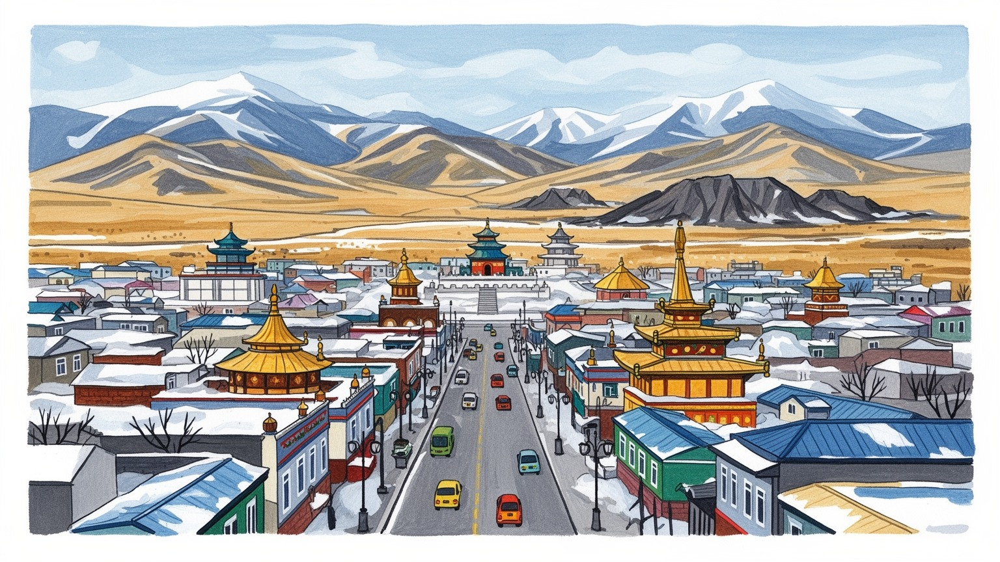
ウランバートルはロシアと中国に挟まれた内陸国家の首都です。鉱物輸出、第三の隣国外交、安全保障、鉄道回廊が交差し、草原の独立性を都市の判断が支えます。均衡感覚が日常にも表れます。燃料と国境も重要です。
行政、鉱業本社、金融、建設、教育、商業、物流が雇用を作ります。資源価格と公共投資が街を動かす一方、若者の就職、家賃、冬の燃料費、通勤時間が生活を圧迫します。移住者も支えています。格差も見えますね。
チベット仏教、シャーマニズム、社会主義期の記憶、現代音楽、相撲、ナーダム、カフェ文化が重なります。寺院と広場、市場と劇場を歩くと、遊牧の記憶が都市生活へ変わる過程が見えます。祈りも今なお続きます。
観光客はスフバートル広場、ガンダン寺、博物館、ザイサン、ナラントール市場、近郊草原を巡ります。住民は渋滞、煙、暖房、学校、買い物、山裾の住宅地を使い分ける毎日を送ります。冬の準備も欠かせませんね。
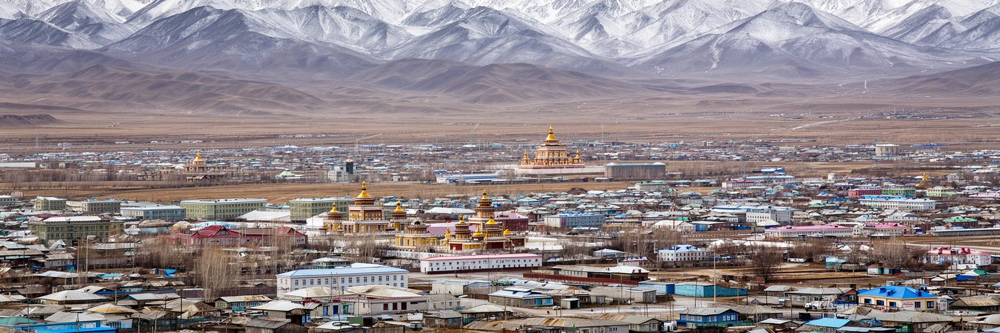
ウランバートルは、広い草原国家の中で例外的に人口と機能が集中する都市です。トール川の谷、北側の丘陵、南のボグド山、東西へ伸びる幹線道路が都市の骨格を作り、政治、大学、病院、金融、商業、文化施設が狭い盆地に集まります。モンゴルの国土は大きく、鉱山、牧畜地、国境の町は遠く離れていますが、国家の判断は多くの場合この谷で組み立てられます。人口の集中は教育や医療へのアクセスを高め、若者に仕事を与えます。一方で、渋滞、住宅不足、空気汚染、暖房、上下水道、廃棄物処理を同じ場所へ押し込みます。ウランバートルを首都として読む時は、草原の自由なイメージだけでは足りません。山に囲まれた地形は冬の煙を逃がしにくく、道路や鉄道の通り道を限り、都市の拡張を谷筋へ導きます。中心部の広場や高層ビルは国家の近代化を見せますが、その周辺ではゲル地区と新興住宅地が急速に広がります。都市は牧畜社会から移ってきた人々を受け入れながら、首都として行政の効率も求められます。谷に集まる力を、住民の安全で健康な暮らしへ変えられるかが、ウランバートルの最も大きな課題です。特に首都への人口移動は、地方で学校や病院、仕事を得にくい現実ともつながっています。中心部だけを整えても、丘の上の住宅地や遠い地区が置き去りになれば、首都の便利さは一部の人に限られます。
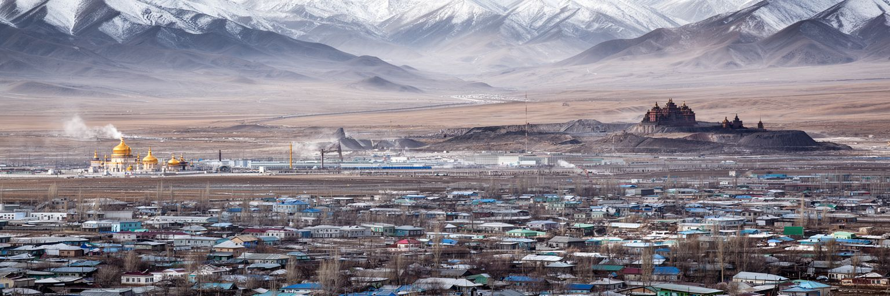
ウランバートルの地政学は、地図を見るだけで理解しやすいです。モンゴルはロシアと中国に挟まれ、海へ直接出られない内陸国です。鉱物輸出の多くは中国市場と鉄道、道路、国境通過に左右され、エネルギーや歴史的な関係ではロシアの影響も残ります。そのため首都の外交は、二大隣国との関係を維持しながら、日本、韓国、米国、欧州、インド、国際機関などとの「第三の隣国」関係を広げる均衡の技術になります。ウランバートルには大使館、国際機関、政府省庁、鉱業企業、研究機関が集まり、草原の外へどう接続するかを日々考えています。地政学は抽象的な外交用語ではなく、燃料価格、輸送費、留学先、観光客、鉱山労働、都市の物価に影響します。中国国境へ向かう石炭輸送が滞れば国家財政に響き、ロシアとの交通や電力の不安が増せば冬の生活にも波及します。首都の政治的役割は、広い国土と限られた人口を守りながら、資源経済を外部市場へ接続することです。ウランバートルの静かな官庁街には、草原国家が大国の間で主権を保つための緊張が重なっています。国際会議や平和維持協力も、人口の少ない国が存在感を示す手段です。首都で交わされる合意は、遠い国境の検問所や鉱山道路、家計の燃料代へつながります。だから外交は官僚だけの仕事ではなく、都市の安定した暮らしを守る基礎でもあります。
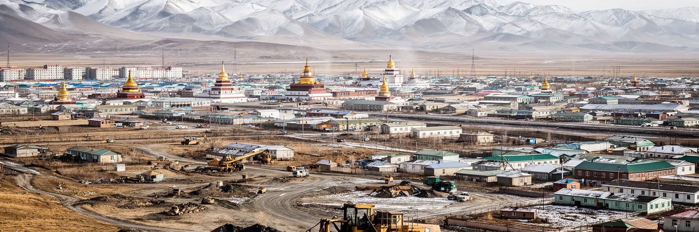
ウランバートルは鉱山都市そのものではありませんが、鉱業国家モンゴルの資本と判断が集まる場所です。オユトルゴイやタバントルゴイのような銅、石炭、金の大型事業はゴビの現場で進みますが、契約、税制、輸送、金融、法律、会計、人材採用、政府交渉は首都と強く結びつきます。鉱業収入は国家予算、建設、銀行、消費、教育投資を支え、中心部のオフィスや新しい住宅を増やしてきました。けれども資源価格に依存する経済は変動が大きく、都市の雇用や家計も影響を受けます。鉱山で働く人は地方と首都を行き来し、家族はウランバートルで学校や医療を求めます。建設現場、警備、清掃、配送、飲食、小売、タクシー、公共サービスの仕事も、資源経済が作る都市の裏側を支えています。若者にとって首都は機会の入口ですが、専門職へ進める人と不安定なサービス労働にとどまる人の差も見えます。鉱業の富を教育、技術、製造、観光、福祉へどれだけ回せるかが都市の将来を左右します。ウランバートルの経済を読むには、鉱山の数字だけでなく、冬の朝にバスを待つ労働者や、郊外から中心部へ通う学生の時間も見る必要があります。公共調達や鉱業契約への信頼が弱まると、資源の利益は社会全体へ届きにくくなります。透明性、職業訓練、中小企業の育成は、首都経済を一時的な建設景気から厚い雇用へ変える鍵です。
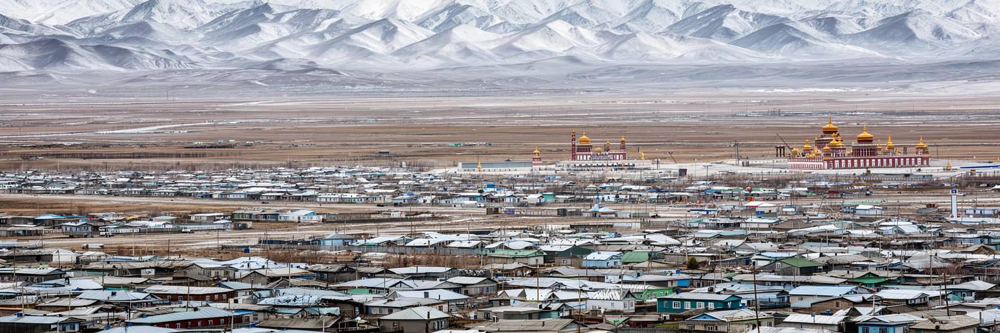
ウランバートルの社会問題を最も具体的に示すのがゲル地区です。地方から移ってきた世帯は、親族の敷地や購入した小さな区画にゲルや簡易住宅を建て、中心部の周囲や丘陵へ広がってきました。ゲルは遊牧の住まいとして合理的ですが、都市の周縁で密集すると、上下水道、暖房、道路、廃棄物、学校、医療、火災安全の課題が生まれます。冬には石炭や低品質燃料を使う暖房が増え、煙は盆地にたまりやすくなります。住民は中心部の職場や学校へ長時間かけて移動し、未舗装路や急な坂、雪と泥に悩まされます。一方で、ゲル地区を単なる貧困地区として見るだけでは不十分です。そこには地方とのつながり、家族の助け合い、土地を持つ安心、都市で自力で暮らす工夫があります。集合住宅への再開発は空気汚染やインフラ改善に役立つ可能性がありますが、家賃や管理費が払えず、住民が遠くへ押し出される危険もあります。必要なのは、道路、上下水道、暖房、公共交通、学校、診療所を段階的に整え、住民の選択肢を増やす政策です。ウランバートルの住宅問題は、首都の成長が誰の暮らしを包み込むかを問う問題でもあります。都市計画は土地の正式な権利、補償、近隣共同体の維持を丁寧に扱う必要があります。住民が移転先や改修方法を選べるほど、改善は押しつけではなく生活の前進になります。
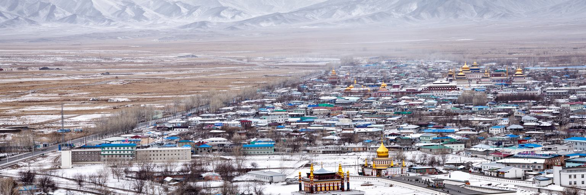
ウランバートルの冬は都市の弱点をはっきり映します。標高の高い盆地では寒さが厳しく、長い暖房季に入るとゲル地区のストーブ、火力発電、交通、建設粉じんが重なり、空気汚染が深刻になります。気温の逆転層ができると煙は谷に残り、朝夕の通勤や登校、乳幼児、高齢者、呼吸器疾患を持つ人に負担をかけます。空気の問題は環境だけでなく、所得、住宅、燃料、交通、医療の問題でもあります。断熱が悪い家では燃料を多く使い、清潔な暖房へ移るには費用が必要です。電気や集中暖房への転換、改良燃料、住宅の断熱、公共交通、道路舗装、排出規制はすべて関係しますが、どれか一つだけでは解決しません。冬の空気が悪い日には、学校の活動、子どもの外遊び、妊婦の移動、屋外労働者の健康が制限されます。首都としての華やかな景観の裏で、住民はマスク、空気清浄機、暖房費、病院の待ち時間を意識して暮らします。ウランバートルの都市政策は、冬に最も弱い人を基準に設計される必要があります。空気が澄むことは、環境改善であると同時に、教育、労働、生産性、医療費、都市への信頼を改善することです。さらに暖房対策は家計補助だけでなく、住宅の断熱改修や地区単位の熱供給と結びつけて考える必要があります。煙の少ない冬は、子どもが外で遊べる時間を取り戻すことでもあります。
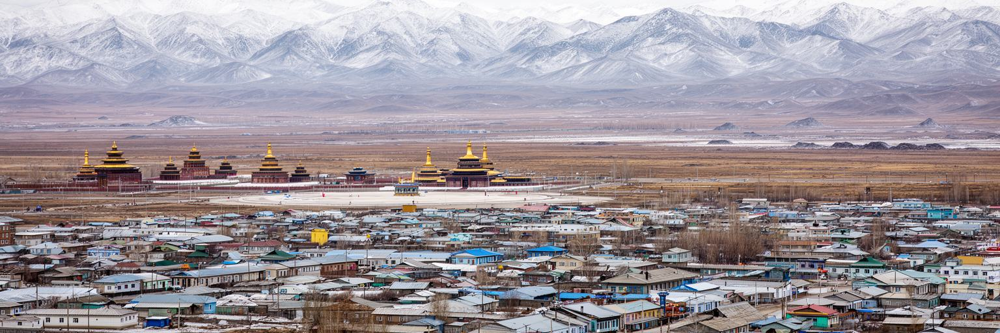
ウランバートルの文化は、チベット仏教の寺院都市としての記憶、社会主義期の計画都市、民主化後の市場経済が重なってできています。ガンダン寺では読経、マニ車、祈り、僧侶の学びが続き、宗教が観光の対象だけではなく、家族行事、供養、日々の不安を受け止める場であることが分かります。一方、スフバートル広場や周辺の公共建築には、革命、国家建設、ソ連との関係、社会主義期の都市計画の記憶が残ります。モンゴルでは二十世紀に宗教施設が大きな打撃を受け、多くの僧院が失われました。その後の復興は、信仰の回復であると同時に、失われた文化をどう現代都市へ戻すかという作業です。シャーマニズム、仏教、世俗的な国家行事、グローバルな若者文化は、同じ街の中で併存します。ナーダムの季節には相撲、競馬、弓、民族衣装が首都の公共空間を満たし、日常のカフェや音楽、映画、ファッションと結びます。文化を読む時は、伝統が固定された展示物ではなく、都市へ移住した人々が新しい形で使い直すものだと考えたいです。ウランバートルでは祈り、革命の記念碑、商業看板、大学の講義が近くに並び、モンゴルの近現代史が歩ける距離に凝縮しています。博物館の展示や劇場の舞台は、遊牧の英雄譚だけでなく、抑圧、移住、民主化の経験も扱います。文化の厚みは、誇りと痛みを同じ都市で語れるかに表れます。
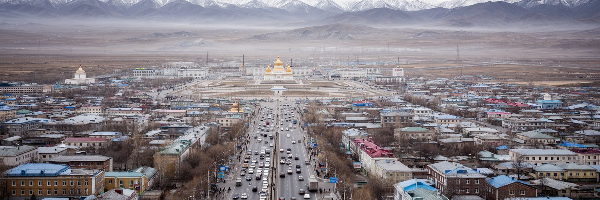
ウランバートルの交通は、都市の集中と地形の制約をそのまま映します。東西に伸びる谷の中で、ピースアベニューなど主要道路へ車が集まり、朝夕の渋滞は通勤、通学、配送、救急、観光の時間を奪います。自動車の増加は所得向上の表れでもありますが、道路だけを広げても人口増加と郊外化には追いつきにくいです。バスは多くの住民にとって重要な移動手段ですが、寒い停留所、混雑、遅れ、乗り換えの不便が信頼性を下げます。ゲル地区の坂道や未舗装路では、冬の雪と春の泥が移動をさらに難しくします。鉄道は都市を横切り、国内外を結ぶ大きな役割を持ちますが、都市内の分断も生みます。新しい空港へのアクセスは国際観光やビジネスに重要ですが、中心部の毎日の移動を改善する公共交通と歩行空間も同じくらい重要です。渋滞は経済損失であるだけでなく、家族の時間、子どもの学習、空気汚染、燃料消費、ストレスに関わります。ウランバートルが暮らしやすい首都になるには、車中心の速度ではなく、歩行者、バス利用者、子ども、高齢者、車を持たない世帯の時間を基準に交通を組み立てる必要があります。冬でも待ちやすい停留所、正確な運行情報、安全な横断歩道が増えれば、公共交通は単なる代替手段ではなく生活の基盤になります。移動の公平さは、首都の社会的な公平さでもあります。
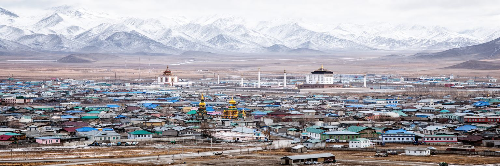
ウランバートルはモンゴルの教育と若者文化の中心です。国立大学、専門学校、研究機関、劇場、博物館、図書館、メディア企業、IT関連の学習環境が集まり、地方から進学や就職で来る若者に多くの選択肢を与えます。首都で学ぶことは、単に授業を受けることではなく、友人、仕事、言語、ファッション、音楽、政治意識、海外との接続を得ることでもあります。モンゴル語の現代文学、ヒップホップ、ロック、映画、デザイン、カフェ文化は、遊牧や仏教のイメージだけでは語れない都市の表情を作っています。一方で、若者にとって首都は負担も大きいです。家賃、寮不足、アルバイト、交通、寒さ、空気汚染、就職競争は、地方出身者ほど重く感じやすいです。英語、日本語、韓国語、中国語を学ぶ人も多く、留学や海外就労への関心は都市文化を外へ開きます。けれども優秀な人材が国外へ流れ続ければ、国内の行政、医療、教育、起業の基盤が薄くなる懸念もあります。ウランバートルの若さは、問題を抱えた未完成さであると同時に、都市を変える力です。手頃な住宅、公共交通、創作の場所、開かれた図書館、自由に議論できる場が増えれば、首都の文化はさらに厚みを持ちます。学生が卒業後も残りたいと思える賃金、研究環境、子育て支援が整えば、都市の若さは一時的な移動ではなく長い蓄積になります。
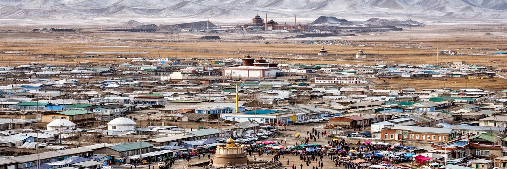
ウランバートルの日常生活は、市場とモール、露店とオンライン配送、伝統食と外食チェーンが混ざって成り立ちます。ナラントール市場のような大きな市場では、衣料、靴、部品、家具、携帯電話、冬支度の品、肉、乳製品、地方から届く産品が並び、家計の現実がよく見えます。寒い季節のコートやブーツ、暖房用品、石炭や燃料、車の部品は、首都生活の必需品です。食卓には羊肉、牛肉、乳製品、麺料理、韓国料理、ロシア風の惣菜、現代的なカフェのメニューが同居します。都市化が進んでも、地方の親族から肉や乳製品が届き、遊牧とのつながりは消費の中に残ります。大型ショッピングモールは中間層の余暇を作り、若者の待ち合わせ場所にもなりますが、価格は所得格差を映します。市場で働く人、運ぶ人、売る人、修理する人は、公式統計に見えにくい都市経済を支えています。冬の物価上昇や燃料費、輸入品の為替影響は、住民の生活に直接響きます。ウランバートルを歩くなら、記念広場だけでなく、市場の混雑、バス停の袋、食堂の昼食、家族の買い物を見ると、首都の本当の密度が分かります。日常の消費は、草原、国境、物流、所得、季節を一つに結ぶ都市の窓です。値切り、修理、まとめ買い、親族からの仕送りは、家計を守る実践でもあります。市場の熱気は、都市が公式の計画だけで動いていないことを教えてくれます。
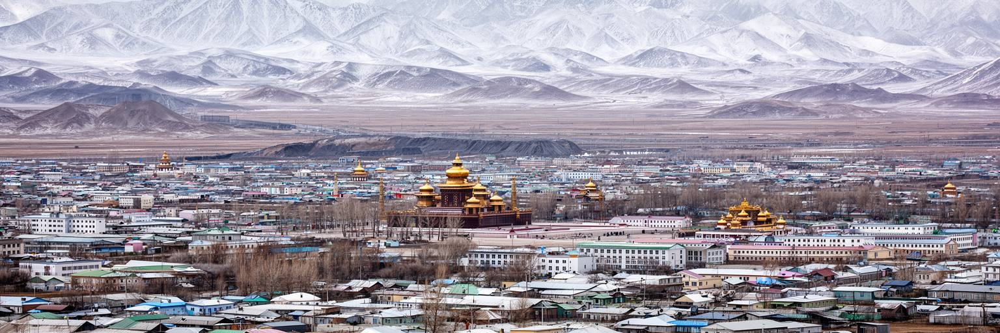
ウランバートル観光は、都市そのものと近郊草原への入口が組み合わさっています。旅行者はスフバートル広場、チンギス・ハーン像、国立博物館、ガンダン寺、ザイサンの丘、ナラントール市場を巡り、そこからテレルジ国立公園、草原のゲル滞在、乗馬、ナーダム観戦へ向かいます。首都はモンゴルの歴史、仏教、社会主義、民主化、鉱業経済を短い距離で見せる場所ですが、多くの旅行者にとっては草原へ出る前後の拠点でもあります。そのためホテル、空港、旅行会社、通訳、土産物、飲食、交通の質が、国全体の観光印象を左右します。都市観光の魅力は、広場や寺院だけでなく、冬の空気、渋滞、市場、住宅地、若者のカフェにもあります。草原のイメージが強い国ほど、首都の日常を丁寧に見る価値があります。一方で観光が増えると、自然保護、動物福祉、文化の商品化、ゴミ、交通、地域住民への利益配分が課題になります。近郊草原を消費するだけの観光ではなく、首都で学び、地元のガイドや小商いに利益が届く形が望まれます。ウランバートルは、草原への玄関であると同時に、モンゴル社会の現在を読む展示室でもあります。旅の前後に街を歩く時間を取ると、草原と都市が切り離せないことが分かります。冬の訪問では寒さと煙、夏の訪問では祭りと郊外の緑が見え、季節ごとに別の読み方ができます。
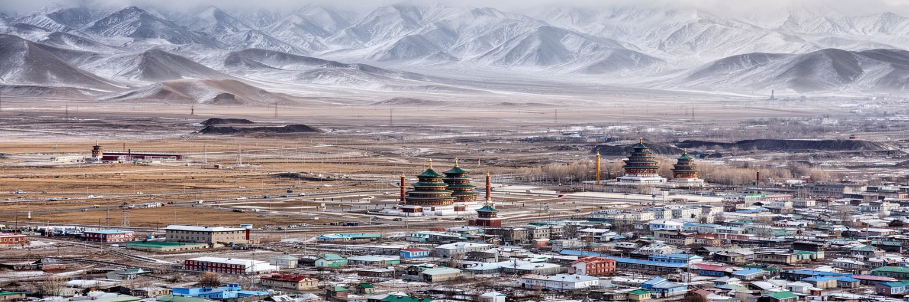
ウランバートルを読むことは、草原の自由なイメージと、首都に集中する現実を重ねることです。モンゴルは広大な国土と遊牧の歴史を持ちますが、人口、行政、大学、病院、金融、文化、消費の多くはこの盆地に集まります。中心部の広場や高層ビルは国家の近代化を見せ、ガンダン寺は信仰の復興を示し、ゲル地区は移住と住宅の不足を語り、冬の煙は都市政策の弱点を突きつけます。鉱業の収入は首都を成長させますが、資源価格、国境輸送、環境、所得格差に左右されます。若者は教育と仕事を求めて集まり、家賃や交通、空気汚染と向き合いながら新しい文化を作ります。観光客は草原へ向かう前に、都市の中でモンゴルの現在を見られます。大切なのは、ウランバートルを未完成な都市として軽く見ることではありません。厳しい気候、急速な人口集中、内陸国の地政学、牧畜社会から都市社会への移行を一度に引き受けている場所として見ることです。首都の成熟は、記念建築の多さではなく、ゲル地区の子どもが清潔な空気の中で学校へ通えるか、若者が安心して働けるか、高齢者が冬に移動できるかに表れます。ウランバートルは、草原国家が二十一世紀の都市生活をどう作るかを示す、最も重要な実験場です。都市の成功は、草原を忘れることではなく、移動、親族、信仰、季節感を新しい公共サービスと結び直すことにあります。